Sandbox API总览：Uni-Agent、Docker与verdal/E2B
整理日期：2026-09-14。Uni-Agent固定版本：
10743439dd0a19da44a94cccad069b135d957bf1；实验使用E2B Python SDK2.49.1。
名称约定：尚未获得“verdal”独立项目的仓库或API规范。本文暂按此前提供的 E2B兼容sandbox服务整理verdal相关接口，不推定其厂商、后端实现或对最新版E2B的完整兼容性。
本文回答：sandbox对象有哪些方法、这些方法最终调用谁、Docker daemon接收什么请求、远端服务如何创建实例和执行命令。Uni-Agent的模型Gateway接口另见Uni-Agent API总览。
1. 先区分四层接口
| 层次 | 谁调用谁 | 接口形式 | 本次使用 |
|---|---|---|---|
| Uni-Agent统一Sandbox | Task/driver、Tool → Sandbox provider | Python异步方法 | 使用 |
| 本地Docker后端 | provider → Docker CLI → 独立dockerd | Docker Engine HTTP API，通过Unix socket传输 | 正式SWE任务、本地sandbox实验 |
| verdal/E2B管理面 | 实验provider → E2B SDK → 用户服务 | REST：创建、查询、销毁等 | 生命周期及查询子集 |
| verdal/E2B执行面 | E2B SDK → sandbox内envd或兼容代理 | Connect RPC执行进程；HTTP传文件 | 命令、读写、工具闭环 |


Uni-Agent Gateway负责模型调用和轨迹；sandbox API负责执行程序与操作文件。session_id是Gateway会话ID，sandbox_id是执行环境ID，二者分别管理。
2. Uni-Agent统一Sandbox Python API
2.1 配置和工厂
主要导入：from uni_agent.sandbox import Sandbox, SandboxConfig, ExecResult, build_sandbox。注册相关方法位于uni_agent.sandbox.registry。
| API | 功能 / 返回 |
|---|---|
SandboxConfig(...) |
指定provider、镜像、超时与provider参数；Pydantic校验配置 |
build_sandbox(config) |
根据provider创建对象，返回Sandbox；此时尚未启动实例 |
get_sandbox_cls(name) |
查找provider类，首次使用时懒加载内置实现 |
register_sandbox(name) |
类装饰器，注册自定义provider |
Sandbox.from_config(config) |
provider将统一配置转换成自己的构造参数 |
ImageMap.try_map(image) |
尝试映射镜像名，匹配则返回目标名，否则None |
| SandboxConfig字段 | 默认 / 约束 | 功能 |
|---|---|---|
provider |
必填 | 内置local/docker/modal/vefaas/openyuanrong；实验另注册e2b_compat |
image |
None |
provider镜像或实验E2B模板标识；使用Docker等provider时建议显式填写 |
runtime_timeout |
3600.0秒 |
provider可采用的生命周期参数；不是所有实现都兑现同样的TTL语义 |
image_map |
[] |
按序应用第一条匹配的from → to规则；支持一次**捕获 |
sandbox_kwargs |
{} |
provider特有构造参数，不是任意Docker/E2B API参数透传的承诺 |
ImageMap的Python字段名是from_，YAML/JSON别名是from。local不允许指定image；image_map要求image存在。未知字段会被配置模型拒绝。
2.2 生命周期：由Task/driver拥有
| 方法 | 参数 / 返回 | 功能 |
|---|---|---|
await start() |
→ None |
创建执行环境并准备数据面 |
await stop() |
→ None |
终止环境并释放资源；具体错误处理由provider实现 |
await is_alive() |
→ bool |
探测是否仍可用；基类默认True，远端实现应在错误时返回False |
async with sandbox as sb |
内部__aenter__(retry=3)、__aexit__ |
启动、执行、退出清理；启动失败带重试与清理 |
async with sandbox.entered(retry=5) |
→ 已启动的sandbox | 参数化的异步上下文入口 |
上下文入口使用SANDBOX_STARTUP_TIMEOUT（默认600秒）约束每次启动尝试，并使用SANDBOX_STARTUP_CONCURRENCY（默认64）限制进程内同一事件循环的并发启动。值不大于0时关闭相应限制。直接调用start()不会自动经过这层上下文包装。
这些参数分别控制启动等待、启动并发；exec(timeout=...)控制一次命令等待，runtime_timeout则是生命周期配置，不能混为同一种timeout。
2.3 执行与文件：由Agent/Tool使用
| 方法 | 主要参数 | 返回与功能 |
|---|---|---|
await exec(argv, *, timeout=None, workdir=None, env=None) |
argv: list[str] |
ExecResult；一次命令执行，无隐式shell |
await exec_shell(script, *, timeout=None, workdir=None, env=None) |
script: str |
ExecResult；基类使用非login的bash -c，支持管道/重定向等shell语法 |
await read_file(path) |
sandbox内文件路径 | bytes，读取完整文件 |
await write_file(path, content) |
content为bytes或str |
→ None，写入文件；str按实现编码为文本 |
await upload(local_path, remote_path) |
调用方路径 → sandbox路径 | 上传文件或目录树 |
await download(remote_path, local_path) |
sandbox路径 → 调用方路径 | 下载文件或目录树 |
await upload_file(local_file, remote_file) |
单个文件 | provider可覆盖的单文件上传通道 |
await download_file(remote_file, local_file) |
单个文件 | provider可覆盖的单文件下载通道 |
await expose_port(port) |
sandbox内端口 | 返回可访问URL/地址；可选能力，基类抛NotImplementedError |
await open_shell(*, cwd=None, env=None) |
初始目录、环境 | 原生长驻shell handle；可选能力，需supports_shell=True |
原生shell handle应提供await run(command, *, timeout=...) → ExecResult及await close()。不支持原生shell时，Uni-Agent的open_shell_session可使用tmux-over-exec；这需要镜像有tmux，不代表所有provider都实现了open_shell。
SandboxBackend是Tool依赖的窄协议，包含exec/exec_shell/read_file/write_file/upload/download/expose_port，不包含start/stop。Tool通常使用已经启动的sandbox，不负责创建一个新的环境。
路径与状态：本实验“local_path”指CPU编排容器里的路径；只有挂载关系明确时它才对应裸机同名文件。文件在同一sandbox生命周期内保留；两次普通exec的cwd/env不自动连续，持久shell才保留这些状态。目录传输的基类实现用tar/gzip打包，经单文件通道传输。
2.4 返回值和异常语义
ExecResult(exit_code: int, stdout: str, stderr: str)是一次命令的结果，不是任务reward。基类exec的处理如下：
| 情况 | 基类行为 |
|---|---|
| provider正常返回，包括普通非零退出 | 保留其ExecResult |
识别为TimeoutError/asyncio.TimeoutError或provider认定的超时 |
返回exit_code=-1、空stdout和错误说明 |
| 其他执行异常，但sandbox仍alive | 返回exit_code=127和错误说明 |
| 其他执行异常，且sandbox不alive | 重新抛出异常 |
Provider仍有差异：OpenYuanrong当前实现将非零命令退出转换成异常，随后可能被基类变成127，不能期待保留原始退出码。实验E2B适配器捕获CommandExitException并保留其退出码/输出，但没有穷尽自定义SDK超时和网络异常映射，is_alive也没有完整的异常兜底。文件API、启动和销毁的异常不统一转换成ExecResult。
2.5 最小调用例子
以下为接口使用示例，没有在本次文档整理时重新创建sandbox。示例进程需要Uni-Agent源码、Docker CLI及可访问的daemon；若在CPU容器内沿用原布局，Docker endpoint为unix:///lab/run/docker.sock。
import asyncio
from uni_agent.sandbox import SandboxConfig, build_sandbox
async def main():
config = SandboxConfig(
provider="docker",
image="python:3.12",
sandbox_kwargs={
"pull_policy": "missing",
"run_args": ["--cpus", "1", "--memory", "1g", "--network", "none"],
},
)
async with build_sandbox(config) as sb:
await sb.write_file("/tmp/demo.py", "print(6 * 7)\n")
result = await sb.exec(["python", "/tmp/demo.py"], timeout=10)
print(result.exit_code, result.stdout)
# context退出时调用stop；本例没有调用模型。
asyncio.run(main())
3. 内置provider的实现范围
新增provider时，用@register_sandbox("provider_name")注册Sandbox子类，实现from_config配置映射及start/stop/_exec。虽然_exec以下划线开头，它是明确的后端实现扩展点；公共exec在它外面统一处理错误。SDK有自定义超时类型时可扩展_is_timeout_error，并让is_alive在网络异常时返回False。文件与原生shell/端口能力可按需要覆盖。
下表依据源码，不表示已在本机逐个部署过远端服务。
| provider / 类 | 主要构造参数 | 执行与文件实现 | 原生shell / expose_port | 实验状态 |
|---|---|---|---|---|
local / LocalSandbox |
无专属参数 | 本进程所在机器/容器的subprocess和文件系统 | 均无 | 作为源码能力列出；不提供新增隔离边界 |
docker / DockerSandbox |
image、docker_binary、container_name、run_args、pull_policy、pull_timeout、start_timeout、entrypoint、command | Docker CLI；单文件上传/下载用docker cp，read/write默认走exec | 均无；可通过run_args配置Docker端口，但没有统一URL返回实现 | 主实验及本地demo使用；lab有派生增强 |
modal / ModalSandbox |
image、app_name、runtime_timeout、额外Modal kwargs | Modal SDK exec；绝对路径原生文件读写/复制 | 无原生shell；expose_port虽声明但始终抛NotImplementedError |
未实测 |
vefaas / VefaasSandbox |
image、runtime_timeout、startup_timeout | 火山SDK生命周期 + SWE-ReX HTTP runtime | 均无；通过tmux支持stateful tool | 未实测 |
openyuanrong / OpenyuanrongSandbox |
image、cpu、memory、cpu_limit、mem_limit、idle_timeout、env、cwd、mounts、add_to_path、upstream、proxy_port、port_forwardings等 | SDK commands、files、shells | 有；另有get_port_url(port)、get_tunnel_url() |
未实测 |
e2b_compat / E2BCompatSandbox |
template、timeout；由image/runtime_timeout映射 | E2B AsyncSandbox、commands、files | 实验适配器没有实现；demo使用tmux | 远端补充实验使用，非上游内置provider |
生命周期参数的实际映射：Modal将runtime_timeout传给SDK的timeout；veFaaS转换成整数分钟；Docker没有依据该字段自动回收；OpenYuanrong当前源码保存了runtime_timeout，但创建SDK实例时没有传递它，使用的是idle_timeout等参数。实验Docker的TTL依靠独立janitor，见本地sandbox实验。
Docker构造默认pull_policy="missing"，还支持always/never；默认以sleep infinity维持容器。run_args插入在镜像参数之前，可配置CPU、内存、网络、卷、标签等。基类write_file通过base64命令传输，实验的EvidenceDocker使用docker cp处理大文件，详见lab_runtime.py。
其他provider调用的服务接口
这是Uni-Agent provider使用的外部能力子集，未收录这些厂商的全部产品API：
| provider | 管理面 | 执行面 |
|---|---|---|
| Modal | modal.App.lookup.aio、modal.Image.from_registry、modal.Sandbox.create.aio、poll.aio、terminate.aio |
exec.aio、filesystem的read_bytes.aio/write_bytes.aio/copy_from_local.aio/copy_to_local.aio |
| veFaaS | 火山SDK create_sandbox(CreateSandboxRequest)、kill_sandbox(KillSandboxRequest) |
SWE-ReX GET /is_alive；POST /execute、/read_file、/write_file、/close |
| OpenYuanrong | SDK Sandbox(...)、is_running()、kill() |
commands.run、shells.create、files读写/复制、get_port_url/get_tunnel_url |
veFaaS runtime请求带X-API-Key和X-Faas-Instance-Name；SDK管理面另用云账号凭据。它的/execute是SWE-ReX协议，和E2B的Process RPC不是同一个接口。
4. 本地sandbox-daemon：Docker Engine API
本次sandbox-daemon是长期运行的独立DinD容器ua-lab-sandbox-daemon。CPU编排容器中执行的Docker CLI通过/lab/run/docker.sock连接它；daemon一侧socket为/run/ua/docker.sock。每题环境由这个daemon创建，agent无需在裸机启动一个Python进程来执行docker run。
以下为相关Docker操作到Engine API的映射，省略协商后的/v1.xx版本前缀。它们是Docker标准接口；实验日志没有逐请求抓包。
| Engine方法与路径 | 对应CLI / Uni-Agent操作 | 功能 |
|---|---|---|
GET /_ping |
连接探测 | 检查daemon响应 |
GET /version |
docker version | Engine版本与API兼容信息 |
GET /info |
docker info | daemon运行信息 |
GET /images/{name}/json |
docker image inspect | 镜像是否存在、元数据 |
POST /images/create |
docker pull | 从registry拉取镜像，返回进度流 |
POST /containers/create |
docker run的创建部分 | 接收Image/Cmd/Entrypoint/Env/HostConfig等，返回容器ID |
POST /containers/{id}/start |
docker run的启动部分 | 启动已创建的容器 |
GET /containers/{id}/json |
docker inspect / is_alive | 查询State、资源配置等 |
GET /containers/json |
docker ps / janitor扫描 | 按状态/标签列举容器 |
POST /containers/{id}/exec |
docker exec第一步 | 接收Cmd/WorkingDir/Env/AttachStdout等，创建exec实例 |
POST /exec/{id}/start |
docker exec第二步 | 启动exec，返回或升级到输出流；非TTY可复用stdout/stderr帧 |
GET /exec/{id}/json |
docker exec结束查询 | 获取Running与ExitCode |
PUT /containers/{id}/archive |
docker cp上传 | 上传tar归档到容器路径 |
GET /containers/{id}/archive |
docker cp下载 | 将容器路径导出为tar归档 |
DELETE /containers/{id}?force=1 |
docker rm -f / stop | 强制终止并删除实例 |
资源、网络与挂载限制由创建参数及daemon配置实现，不由模型Gateway实现。获得这个socket的调用方可以管理此daemon中的容器；实验使用独立daemon来限定管理范围。
一次命令timeout不等于整个sandbox TTL，也不保证远端子进程已停止；Task上下文清理、provider.stop和janitor分别承担不同阶段的回收。Docker服务其余API见官方Engine API参考，不属于Uni-Agent自有HTTP路由。
5. verdal/E2B：地址、认证与协议
5.1 两个地址用途不同
| 配置 / 请求头 | 所在层 | 含义 |
|---|---|---|
E2B_API_URL |
管理面 | sandbox/template等REST基地址 |
E2B_API_KEY → X-API-Key |
管理面 | 账户/项目API凭据，由SDK注入 |
E2B_SANDBOX_URL |
执行面 | 可覆盖envd连接地址；本实验使用服务的兼容代理地址 |
E2b-Sandbox-Id |
执行面 | 指明目标实例 |
E2b-Sandbox-Port: 49983 |
执行面 | envd端口标识，由SDK设置 |
X-Access-Token |
执行面 | 若创建响应提供envdAccessToken，SDK据此设置执行面凭据 |
两个URL可以指向同一个代理前缀，但职责仍不同。不能仅给一个X-API-Key就假设能够访问所有envd端点。实例应用流量还可能有trafficAccessToken与独立domain，不能把这些字段混同于模型服务的API key。
本文示例只使用环境变量和占位值。已有服务的真实地址、密钥不复制到报告。
5.2 实验验证范围
| 能力 | 已有证据 / 结论 |
|---|---|
| 创建、命令执行、写文件、读文件、销毁 | SDK smoke记录 |
| 官方sandbox demo、持久shell与文件编辑 | E2B实验说明及demo入口 |
| Uni-Agent ReAct完整代码修复 | 远端result.json，修复后10/10测试通过 |
| 上述操作需要的API子集 | 可与E2B SDK完成实用闭环 |
| 下列清单中的其余生命周期、模板构建、快照、卷等 | 仅为SDK契约；未证明用户服务支持 |
API清单完整性口径：下面46条管理REST契约来自本机安装的E2B 2.49.1生成客户端；17条RPC来自该SDK的envd生成代码。它们不是远端服务的OpenAPI导出，也不是46+17项兼容测试报告。
6. E2B管理面REST清单（46条SDK契约）
路径相对E2B_API_URL。表中请求模型名对应SDK的api/client/models/，可在机器清单追溯具体生成文件。—表示没有该生成客户端定义的JSON body，仍可能有查询参数。
6.1 Sandbox生命周期、查询和网络（17条）
| 方法与路径 | JSON body模型 | 功能 |
|---|---|---|
POST /sandboxes |
NewSandbox |
从模板创建实例 |
DELETE /sandboxes/{sandbox_id} |
— | 终止实例 |
GET /sandboxes |
— | 列举运行中的实例，旧版接口 |
GET /v2/sandboxes |
— | v2实例列表，支持SDK分页/筛选 |
GET /sandboxes/{sandbox_id} |
— | 获取实例详情 |
POST /sandboxes/{sandbox_id}/connect |
ConnectSandbox |
连接/恢复实例并按请求调整生命周期 |
POST /sandboxes/{sandbox_id}/timeout |
SandboxTimeoutRequest |
更新剩余运行时间 |
POST /sandboxes/{sandbox_id}/pause |
SandboxPauseRequest |
暂停实例，可指定保留内存 |
POST /sandboxes/{sandbox_id}/resume |
ResumedSandbox |
恢复已暂停的实例 |
POST /sandboxes/{sandbox_id}/fork |
SandboxForkRequest |
从已有实例派生副本 |
POST /sandboxes/{sandbox_id}/refreshes |
SandboxRefreshRequest |
按刷新策略延长实例运行时间 |
POST /sandboxes/{sandbox_id}/snapshots |
SandboxSnapshotRequest |
创建快照 |
PUT /sandboxes/{sandbox_id}/network |
SandboxNetworkUpdateConfig |
更新网络访问设置 |
GET /sandboxes/{sandbox_id}/logs |
— | 查询实例日志 |
GET /v2/sandboxes/{sandbox_id}/logs |
— | v2实例日志查询 |
GET /sandboxes/{sandbox_id}/metrics |
— | 查询单实例指标 |
GET /sandboxes/metrics |
— | 查询多个实例指标 |
6.2 Template、构建和标签（19条）
| 方法与路径 | JSON body模型 | 功能 |
|---|---|---|
GET /templates |
— | 列举模板 |
GET /v2/templates |
— | v2模板列表 |
POST /templates |
TemplateBuildRequest |
创建模板/构建定义 |
POST /v2/templates |
TemplateBuildRequestV2 |
v2创建入口 |
POST /v3/templates |
TemplateBuildRequestV3 |
v3创建入口 |
GET /templates/{template_id} |
— | 列举该模板的构建 |
POST /templates/{template_id} |
TemplateBuildRequest |
重新构建模板 |
PATCH /templates/{template_id} |
TemplateUpdateRequest |
修改模板设置 |
PATCH /v2/templates/{template_id} |
TemplateUpdateRequest |
v2修改入口 |
DELETE /templates/{template_id} |
— | 删除模板；SDK快照删除也复用此管理路径 |
GET /templates/aliases/{alias} |
— | 检查模板alias |
POST /templates/{template_id}/builds/{build_id} |
— | 开始构建 |
POST /v2/templates/{template_id}/builds/{build_id} |
TemplateBuildStartV2 |
v2开始构建 |
GET /templates/{template_id}/builds/{build_id}/status |
— | 轮询构建状态 |
GET /templates/{template_id}/builds/{build_id}/logs |
— | 获取构建日志 |
GET /templates/{template_id}/files/{hash_} |
— | 获取构建文件上传URL；hash_是生成代码参数名 |
GET /templates/{template_id}/tags |
— | 列出标签 |
POST /templates/tags |
AssignTemplateTagsRequest |
分配模板标签 |
DELETE /templates/tags |
DeleteTemplateTagsRequest |
删除标签关联 |
E2B模板标识与Docker镜像地址不是自动等价的。将SWE-bench逐题镜像接到远端，需要额外的模板构建与映射验证；当前实验只验证了现有模板。
6.3 Snapshot、Secret和Volume（10条）
| 方法与路径 | JSON body模型 | 功能 |
|---|---|---|
GET /snapshots |
— | 列举快照；创建入口在sandbox资源下 |
GET /secrets |
— | 列出项目secret |
GET /secrets/{secret_id} |
— | 获取secret信息 |
POST /secrets |
NewSecret |
创建secret |
POST /secrets/{secret_id} |
SecretUpdate |
更新secret |
DELETE /secrets/{secret_id} |
— | 删除secret |
GET /volumes |
— | 列举团队持久卷 |
GET /volumes/{volume_id} |
— | 获取卷信息 |
POST /volumes |
NewVolume |
创建持久卷 |
DELETE /volumes/{volume_id} |
— | 删除持久卷 |
6.4 创建实例的主要字段与返回值
POST /sandboxes的wire JSON字段与Python参数名有差别：
| JSON字段 | 功能 |
|---|---|
templateID |
必填，模板ID/alias；SDK调用参数名是template |
timeout |
生命周期秒数，建议显式设置；底层生成模型默认15，SDK高层有自己的默认策略 |
metadata |
用于识别/筛选的键值信息 |
envVars |
环境变量；高层SDK参数为envs |
secure |
请求启用受保护的envd访问 |
allow_internet_access / network |
出站网络及访问策略配置 |
autoPause / autoPauseMemory / autoResume |
生命周期/自动恢复设置，服务支持情况需确认 |
mcp / iam / volumeMounts |
可选服务扩展设置，本实验未验证 |
生成响应模型包含sandboxID/templateID/clientID/envdVersion，以及可选alias/envdAccessToken/trafficAccessToken/domain。SDK用这些字段构建后续连接。不要把响应中的访问token保存到公开实验结果。
# 仅展示请求形状；凭据预先放在环境变量，模板替换为已存在的模板。
curl --fail-with-body -X POST "${E2B_API_URL%/}/sandboxes" \
-H "X-API-Key: ${E2B_API_KEY}" \
-H 'Content-Type: application/json' \
-d '{"templateID":"<existing-template>","timeout":600,"metadata":{"purpose":"api-example"}}'
执行面涉及返回token、代理头和流式协议，实际接入优先使用下一节的SDK例子。该curl片段本身只创建实例，不会自动销毁它。
7. E2B执行面：envd HTTP与Connect RPC
执行面地址由SDK解析，可以是实例专属地址，也可以由E2B_SANDBOX_URL覆盖成代理。下列路径相对于执行面URL。
7.1 基础HTTP
| 方法与路径 | 功能 / 返回 |
|---|---|
GET /health |
envd健康探测，供SDK判断实例是否可访问 |
GET /files?path=<encoded-path> |
下载文件内容；可携带user/签名等参数 |
POST /files?path=<encoded-path> |
写文件；SDK按envd版本和配置使用multipart或octet-stream，可选gzip |
download_url/upload_url生成文件访问URL，不等同于已经完成传输；签名机制和自定义代理是否兼容需要实际服务支持。
7.2 Process RPC（8条）
这些是Connect RPC路径，客户端通常使用POST，携带RPC内容类型与消息封装。Start/Connect返回服务端事件流；不要把它们当成普通JSON REST接口，直接拼出/sandboxes/{id}/commands。
| RPC路径 | 功能 / SDK关联 |
|---|---|
/process.Process/Start |
启动命令/PTY，流式返回启动信息、stdout/stderr与退出事件；commands.run、pty.create |
/process.Process/Connect |
连接已有进程的输出流；commands.connect、pty.connect |
/process.Process/List |
列出运行中的进程；commands.list |
/process.Process/SendInput |
向进程stdin或PTY发送输入；send_stdin |
/process.Process/CloseStdin |
关闭输入；close_stdin |
/process.Process/SendSignal |
发送信号，例如kill进程 |
/process.Process/Update |
更新进程设置，例如PTY窗口尺寸；pty.resize |
/process.Process/StreamInput |
客户端流式输入RPC；生成契约存在，实验未单独验证 |
7.3 Filesystem RPC（9条）
| RPC路径 | 功能 / SDK关联 |
|---|---|
/filesystem.Filesystem/Stat |
文件/目录元信息；files.get_info、exists |
/filesystem.Filesystem/ListDir |
列目录；files.list |
/filesystem.Filesystem/MakeDir |
创建目录；files.make_dir |
/filesystem.Filesystem/Move |
移动/重命名；files.rename |
/filesystem.Filesystem/Remove |
删除文件或目录；files.remove |
/filesystem.Filesystem/WatchDir |
以流订阅目录变更 |
/filesystem.Filesystem/CreateWatcher |
建立可轮询的watcher |
/filesystem.Filesystem/GetWatcherEvents |
拉取watcher事件 |
/filesystem.Filesystem/RemoveWatcher |
清理watcher |
本版SDK的watch_dir高层实现使用WatchDir流式协议，并对递归、entry信息等选项检查envd版本；其余watcher方法作为生成RPC契约列出，不代表高层watch_dir会调用它们。17条RPC的源码位置和文件hash可追溯清单见api-inventory.json；这次实验主要验证命令执行和HTTP文件传输，没有逐个验收所有RPC。
8. E2B Python SDK：高层调用与功能
以下以实验使用的异步from e2b import AsyncSandbox为主。同包也有同步Sandbox；不要与Uni-Agent的同名基类混淆。sb表示一个已创建/连接的E2B实例。
8.1 生命周期与查询
| 高层API | 主要参数 / 返回 | 功能 |
|---|---|---|
await AsyncSandbox.create(...) |
template、timeout、metadata、envs、secure、network等 → 实例 | 创建并初始化SDK连接 |
await AsyncSandbox.connect(sandbox_id, ...) / await sb.connect(...) |
timeout、on_resume等 → 实例 | 连接或恢复已有实例 |
await sb.is_running() |
→ bool | 通过健康检查确认可访问 |
await sb.kill() |
→ bool | 销毁；也支持类级按ID调用 |
await sb.set_timeout(timeout) |
秒 → None | 调整运行时间 |
await sb.pause(keep_memory=True) |
→ bool | 暂停；beta_pause为弃用兼容名 |
await sb.fork(timeout=..., count=...) |
→ 副本或异常组成的list | 创建多个fork；要逐项检查失败 |
await sb.get_info() |
→ SandboxInfo | 生命周期和配置详情 |
await sb.get_metrics(start=..., end=...) |
→ 指标list | 查询时间区间内指标 |
await sb.update_network(network) |
→ None | 修改网络设置 |
AsyncSandbox.list(query=..., limit=..., next_token=..., order=...) |
→ AsyncSandboxPaginator | 获取分页器，使用await paginator.next_items()读页 |
await sb.create_snapshot(name=...) |
→ SnapshotInfo | 创建快照 |
sb.list_snapshots(...) / AsyncSandbox.list_snapshots(...) |
→ AsyncSnapshotPaginator | 分页列快照 |
await AsyncSandbox.delete_snapshot(snapshot_id) |
→ bool | 删除快照 |
sb.get_host(port) |
→ host字符串 | 得到应用端口访问主机名；不负责在端口启动应用 |
sb.download_url(...) / sb.upload_url(...) |
path、user、use_signature_expiration → URL | 获取文件传输URL |
sb.get_mcp_url() / await sb.get_mcp_token() |
URL / token | 已配置MCP服务的连接辅助，未实测 |
SDK支持的类级/实例级重载、版本门槛及账户权限并不一定由用户端点全部实现。
8.2 命令与终端
| API | 功能 / 返回 |
|---|---|
await sb.commands.run(cmd, ...) |
执行shell命令字符串；可配置cwd/envs/user/timeout/request_timeout/stdin/输出回调 |
run(..., background=False) |
等待完成，返回CommandResult；非零退出通常抛CommandExitException |
run(..., background=True) |
返回AsyncCommandHandle，随后可wait或写入输入 |
await sb.commands.connect(pid, ...) |
接上已有进程，返回handle |
await sb.commands.list() |
返回ProcessInfo列表 |
await sb.commands.kill(pid) |
终止进程，返回bool；与sb.kill销毁整个环境不同 |
await sb.commands.send_stdin(pid, data) / close_stdin(pid) |
写入/关闭进程输入 |
handle.pid/stdout/stderr/error/exit_code |
当前进程标识、已收集输出与状态 |
await handle.wait() |
等到退出并返回CommandResult |
await handle.disconnect() |
断开当前流连接，不等同于终止sandbox |
await handle.kill() / send_stdin(data) / close_stdin() |
handle级进程控制 |
await sb.pty.create(...) / connect(pid, ...) |
创建/连接交互终端，带输出回调与窗口设置 |
await sb.pty.send_stdin(pid, data) / resize(pid, size) / kill(pid) |
输入、调整窗口、终止PTY进程 |
8.3 文件、目录与Git
| API | 功能 / 返回 |
|---|---|
await sb.files.read(path, format="text") |
str；format="bytes"为bytearray，"stream"为异步流reader |
await sb.files.write(path, data) |
写入str/bytes/IO，返回WriteInfo |
await sb.files.write_files(files) |
批量写入，返回WriteInfo列表 |
await sb.files.list(path, depth=1) |
EntryInfo列表 |
await sb.files.exists(path) |
bool |
await sb.files.get_info(path) |
EntryInfo |
await sb.files.make_dir(path) |
创建目录，返回bool |
await sb.files.rename(old_path, new_path) |
移动路径，返回EntryInfo |
await sb.files.remove(path) |
删除路径 |
await sb.files.watch_dir(path, on_event=..., ...) |
订阅事件，返回AsyncWatchHandle；await handle.stop()结束订阅 |
sb.git |
在commands之上封装Git操作，属于SDK便利层；不是新增REST业务路由 |
Git便利方法包括clone/init/remote_add/remote_get/status/branches/create_branch/checkout_branch/delete_branch/add/commit/reset/restore/push/pull/set_config/get_config/configure_user/dangerously_authenticate。本次未对这些便利方法单独验收；它们依赖sandbox内的git与网络/凭据。
8.4 带清理的最小SDK示例
import asyncio
import os
from e2b import AsyncSandbox, CommandExitException
async def main():
# E2B_API_KEY / E2B_API_URL / E2B_SANDBOX_URL由运行环境注入。
sb = await AsyncSandbox.create(
template=os.environ["E2B_TEMPLATE"],
timeout=600,
metadata={"purpose": "api-example"},
request_timeout=30,
)
try:
await sb.files.write("/tmp/demo.txt", "hello sandbox\n")
print(await sb.files.read("/tmp/demo.txt"))
try:
result = await sb.commands.run("python3 -c 'print(6 * 7)'", timeout=10)
except CommandExitException as exc:
result = exc
print(result.exit_code, result.stdout, result.stderr)
finally:
await sb.kill()
asyncio.run(main())
示例用于解释接口，文档整理没有执行它，也没有重新探测或修改远端服务。
9. 实验E2B适配器如何接入Uni-Agent
源文件：e2b_provider.py。导入该模块会注册e2b_compat，然后可经统一工厂构造：
import e2b_provider # 先把实验scripts目录加入PYTHONPATH；导入时注册provider
from uni_agent.sandbox import SandboxConfig, build_sandbox
config = SandboxConfig(
provider="e2b_compat",
image="<existing-template>",
runtime_timeout=600,
)
sb = build_sandbox(config) # 在async函数中用 async with sb 管理生命周期
| Uni-Agent调用 | 实验provider实际实现 |
|---|---|
from_config(config) |
image映射为template，runtime_timeout映射为整数秒timeout；没有透传sandbox_kwargs |
start() |
AsyncSandbox.create(template=..., timeout=..., metadata=..., request_timeout=30) |
stop() |
await sb.kill() |
_exec(argv, timeout, workdir, env) |
shlex.join转命令字符串，再调commands.run；workdir→cwd、env→envs；timeout未提供时120秒 |
read_file(path) |
files.read(format="bytes")并转bytes |
write_file(path, content) |
files.write |
upload_file/download_file |
调用方Path字节读写 + 远端files接口 |
is_alive() |
sb.is_running |
这个适配器实现了本次工具闭环需要的接口；未提供原生shell handle、端口暴露、模板构建、快照、持久卷等Uni-Agent扩展。正式SWE-bench仍用Docker；远端ReAct补充实验直接调用本地vLLM模型API，没有经过Uni-Agent Gateway。
10. 查阅依据与覆盖范围
- Uni-Agent sandbox源码（固定commit）：统一接口及五个内置provider。
- E2B Python SDK包版本和上游仓库：本页远端契约取自实验实际安装的2.49.1生成代码，不以滚动更新的网页替代版本依据。
- api-inventory.json：Uni-Agent公开名称/签名、两条Gateway业务路由、46条E2B REST和17条RPC的来源索引。
- 本地sandbox实验与远端sandbox实验：实际行为与验证结果。
下面附录列出Uni-Agent sandbox模块的全部公开名称及直接声明的方法。它是源码可检索索引，包含配置、扩展辅助函数与实现类，不意味着所有名称都是长期稳定的SDK承诺。继承方法见基类，不重复计算；构造签名只描述调用形状。
11. Uni-Agent Sandbox源码接口索引
uni_agent.sandbox.base
ExecResult — Result of a single one-shot command. 源码
直接声明字段：exit_code、stdout、stderr。完整类型/默认值见机器清单；继承字段见基类。
ImageMap — Glob from → to for image. ** captures; :latest also matches untagged. 源码
继承：BaseModel。
直接声明字段：from_、to。完整类型/默认值见机器清单；继承字段见基类。
| 方法签名 / 属性getter | 功能（优先保留源码docstring） |
|---|---|
try_map(self, image: str) -> str \| None |
尝试匹配并映射镜像名称。 |
SandboxConfig — Which provider to run, plus its construction kwargs. 源码
继承：BaseModel。
直接声明字段：provider、runtime_timeout、image、image_map、sandbox_kwargs。完整类型/默认值见机器清单；继承字段见基类。
SandboxBackend — Narrow data-plane surface that tools depend on. 源码
继承：Protocol。
| 方法签名 / 属性getter | 功能（优先保留源码docstring） |
|---|---|
async exec(self, argv: list[str], *, timeout: float \| None=None, workdir: str \| None=None, env: dict[str, str] \| None=None) -> ExecResult |
该类声明的方法；参数和返回类型如下，具体分支见源码。 |
async exec_shell(self, script: str, *, timeout: float \| None=None, workdir: str \| None=None, env: dict[str, str] \| None=None) -> ExecResult |
该类声明的方法；参数和返回类型如下，具体分支见源码。 |
async read_file(self, path: str) -> bytes |
读取执行环境内文件。 |
async write_file(self, path: str, content: bytes \| str) -> None |
写入执行环境内文件。 |
async upload(self, local_path: Path \| str, remote_path: str) -> None |
该类声明的方法；参数和返回类型如下，具体分支见源码。 |
async download(self, remote_path: str, local_path: Path \| str) -> None |
该类声明的方法；参数和返回类型如下，具体分支见源码。 |
async expose_port(self, port: int) -> str |
端口访问扩展点；Modal实现是抛异常的占位，详见正文。 |
Sandbox — One provider = one class: owns lifecycle and is the data-plane backend. 源码
继承：abc.ABC。
直接声明字段：provider、supports_shell。完整类型/默认值见机器清单；继承字段见基类。
| 方法签名 / 属性getter | 功能（优先保留源码docstring） |
|---|---|
@classmethod from_config(cls, config: SandboxConfig) -> Sandbox |
Build an instance from a SandboxConfig. |
async start(self) -> None |
Create the sandbox and ready the data plane. |
async stop(self) -> None |
Terminate the sandbox and release resources. |
async open_shell(self, *, cwd: str \| None=None, env: dict[str, str] \| None=None) -> Any |
Open a long-lived native shell handle (cwd/env persist across runs). |
async __aenter__(self, retry: int=3) -> Sandbox |
Create the sandbox (retrying transient start() failures) and return it ready. |
async __aexit__(self, *exc) -> None |
退出异步上下文并清理。 |
async entered(self, **start_kwargs: Any) -> AsyncIterator[Sandbox] |
该类声明的方法；参数和返回类型如下，具体分支见源码。 |
async exec(self, argv: list[str], *, timeout: float \| None=None, workdir: str \| None=None, env: dict[str, str] \| None=None) -> ExecResult |
Run argv once and return its captured result (no implicit shell). |
async is_alive(self) -> bool |
Cheap probe for whether the sandbox is still usable. |
async exec_shell(self, script: str, *, timeout: float \| None=None, workdir: str \| None=None, env: dict[str, str] \| None=None) -> ExecResult |
Convenience: run script through a non-login bash -c shell. |
async expose_port(self, port: int) -> str |
Return a host-reachable URL/addr for an in-sandbox port. |
async read_file(self, path: str) -> bytes |
Read and return the bytes of path (floor: base64 over exec). |
async write_file(self, path: str, content: bytes \| str) -> None |
Write content to path (floor: base64 -d over exec). |
async upload(self, local_path: Path \| str, remote_path: str) -> None |
Upload a host file or directory tree into the sandbox. |
async download(self, remote_path: str, local_path: Path \| str) -> None |
Download a sandbox file or directory tree to the host. |
async upload_file(self, local_file: Path \| str, remote_file: str) -> None |
Upload one host file into the sandbox (floor: inline via write_file). |
async download_file(self, remote_file: str, local_file: Path \| str) -> None |
Download one sandbox file to the host (floor: via read_file). |
uni_agent.sandbox.docker
DockerSandbox — Run an isolated sandbox from an image available to a local Docker daemon. 源码
继承：Sandbox。
| 方法签名 / 属性getter | 功能（优先保留源码docstring） |
|---|---|
__init__(self, *, image: str='python:3.12', docker_binary: str='docker', container_name: str \| None=None, run_args: list[str] \| None=None, pull_policy: str='missing', pull_timeout: float \| None=None, start_timeout: float \| None=None, entrypoint: str='sleep', command: list[str] \| None=None) -> None |
构造对象；只列源码显式声明的构造器。 |
@classmethod from_config(cls, config: SandboxConfig) -> DockerSandbox |
按配置构造该类。 |
async start(self) -> None |
启动该对象负责的资源/执行环境。 |
async stop(self) -> None |
停止并释放该对象负责的资源。 |
async is_alive(self) -> bool |
查询执行环境是否可用。 |
async upload_file(self, local_file: Path \| str, remote_file: str) -> None |
上传单个文件。 |
async download_file(self, remote_file: str, local_file: Path \| str) -> None |
下载单个文件。 |
uni_agent.sandbox.local
LocalSandbox — Runs commands on the host via asyncio subprocesses (no container). 源码
继承：Sandbox。
| 方法签名 / 属性getter | 功能（优先保留源码docstring） |
|---|---|
async start(self) -> None |
启动该对象负责的资源/执行环境。 |
async stop(self) -> None |
停止并释放该对象负责的资源。 |
async read_file(self, path: str) -> bytes |
Read directly from the host filesystem without base64 transport. |
async write_file(self, path: str, content: bytes \| str) -> None |
Write directly to the host filesystem, creating parent directories. |
uni_agent.sandbox.modal
ModalSandbox — Creates a Modal sandbox (sleep infinity) and drives it via exec. 源码
继承：Sandbox。
| 方法签名 / 属性getter | 功能（优先保留源码docstring） |
|---|---|
__init__(self, *, image: str='python:3.12-slim', app_name: str='agent-sandbox', runtime_timeout: float=3600.0, **modal_sandbox_kwargs) |
构造对象；只列源码显式声明的构造器。 |
@classmethod from_config(cls, config: SandboxConfig) -> ModalSandbox |
按配置构造该类。 |
async start(self) -> None |
启动该对象负责的资源/执行环境。 |
async stop(self) -> None |
停止并释放该对象负责的资源。 |
async is_alive(self) -> bool |
查询执行环境是否可用。 |
async read_file(self, path: str) -> bytes |
读取执行环境内文件。 |
async write_file(self, path: str, content: bytes \| str) -> None |
写入执行环境内文件。 |
async upload_file(self, local_file: Path \| str, remote_file: str) -> None |
上传单个文件。 |
async download_file(self, remote_file: str, local_file: Path \| str) -> None |
下载单个文件。 |
async expose_port(self, port: int) -> str |
端口访问扩展点；Modal实现是抛异常的占位，详见正文。 |
uni_agent.sandbox.openyuanrong
OpenyuanrongSandbox — Command execution via remote sandbox. 源码
继承：Sandbox。
| 方法签名 / 属性getter | 功能（优先保留源码docstring） |
|---|---|
__init__(self, *, image: str, runtime_timeout: float=3600.0, cpu: int=2000, memory: int=4096, cpu_limit: int=8000, mem_limit: int=12288, idle_timeout: int=7200, env: dict[str, str] \| None=None, add_to_path: list[str] \| None=None, cwd: str \| None=None, name: str \| None=None, mounts: list[Any] \| None=None, upstream: str \| None=None, proxy_port: int \| None=None, port_forwardings: list[int] \| None=None, **extra_kwargs: Any) -> None |
构造对象；只列源码显式声明的构造器。 |
@classmethod from_config(cls, config: SandboxConfig) -> OpenyuanrongSandbox |
按配置构造该类。 |
async start(self) -> None |
启动该对象负责的资源/执行环境。 |
async stop(self) -> None |
Kill the sandbox if still running. |
async is_alive(self) -> bool |
查询执行环境是否可用。 |
async open_shell(self, *, cwd: str \| None=None, env: dict[str, str] \| None=None) -> _OpenyuanrongShell |
Return a long-lived SDK shell (cwd/env persist across run calls). |
async read_file(self, path: str) -> bytes |
Read via SDK files.read(..., format='bytes'). |
async write_file(self, path: str, content: bytes \| str) -> None |
Write via SDK files.write. |
async upload(self, local_path: Path \| str, remote_path: str) -> None |
Upload file or directory via SDK files.copy_from_local. |
async download(self, remote_path: str, local_path: Path \| str) -> None |
Download file or directory via SDK files.copy_to_local. |
async expose_port(self, port: int) -> str |
Return gateway URL for a port declared in port_forwardings. |
get_port_url(self, port: int) -> str |
取得已配置的端口访问地址。 |
get_tunnel_url(self) -> str |
取得隧道访问地址。 |
uni_agent.sandbox.registry
register_sandbox — Class decorator: register a Sandbox provider under name (and stamp cls.provider). 源码
register_sandbox(name: str) -> Callable[[type[Sandbox]], type[Sandbox]]
get_sandbox_cls — Return a registered provider class by name, importing its module on first use. 源码
get_sandbox_cls(name: str) -> type[Sandbox]
build_sandbox — Instantiate the sandbox provider named by config.provider from its config. 源码
build_sandbox(config: SandboxConfig) -> Sandbox
uni_agent.sandbox.utils
pack_dir — Pack source_dir into a tar stream, rooted at . (full fidelity). 源码
pack_dir(source_dir: Path | str, fileobj: BinaryIO, *, compress: bool=True) -> None
pack_dir_to_file — Pack source_dir into a tar archive file (see pack_dir). 源码
pack_dir_to_file(source_dir: Path | str, archive_path: Path | str, *, compress: bool=True) -> None
extract_dir — Extract a tar stream into target_dir. 源码
extract_dir(fileobj: BinaryIO, target_dir: Path | str) -> None
extract_dir_from_file — Extract a tar archive file into target_dir (see extract_dir). 源码
extract_dir_from_file(archive_path: Path | str, target_dir: Path | str) -> None
remote_pack_command — POSIX-shell command packing a sandbox directory into a gzipped archive. 源码
remote_pack_command(source_dir: str, archive_path: str) -> str
remote_unpack_command — POSIX-shell command extracting a staged gzipped archive in the sandbox. 源码
remote_unpack_command(archive_path: str, target_dir: str) -> str
uni_agent.sandbox.vefaas
VefaasSandbox — Creates a Volcengine veFaaS sandbox and drives it over swerex. 源码
继承：Sandbox。
| 方法签名 / 属性getter | 功能（优先保留源码docstring） |
|---|---|
__init__(self, *, image: str='enterprise-public-2-cn-beijing.cr.volces.com/vefaas-public/python:3.12', runtime_timeout: float=3600.0, startup_timeout: float=120.0) -> None |
构造对象；只列源码显式声明的构造器。 |
@classmethod from_config(cls, config: SandboxConfig) -> VefaasSandbox |
按配置构造该类。 |
async start(self) -> None |
启动该对象负责的资源/执行环境。 |
async stop(self) -> None |
停止并释放该对象负责的资源。 |
async is_alive(self) -> bool |
查询执行环境是否可用。 |
async write_file(self, path: str, content: bytes \| str) -> None |
Write via swerex's native file endpoint (content in the HTTP body). |
async read_file(self, path: str) -> bytes |
Read via swerex's native file endpoint, mirroring write_file. |